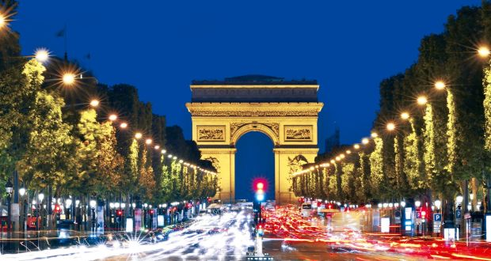
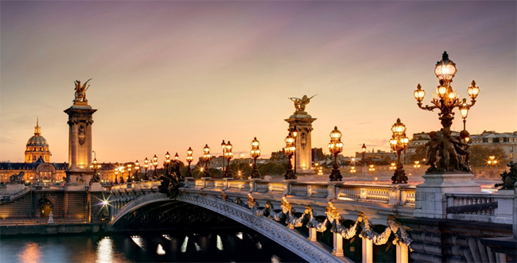
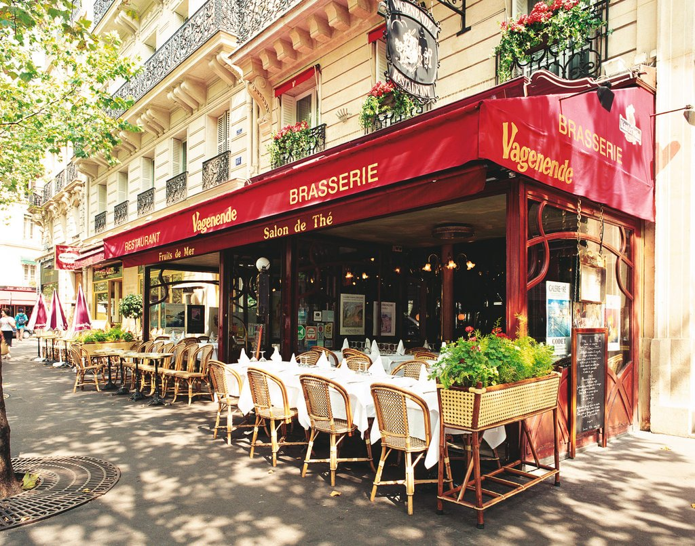
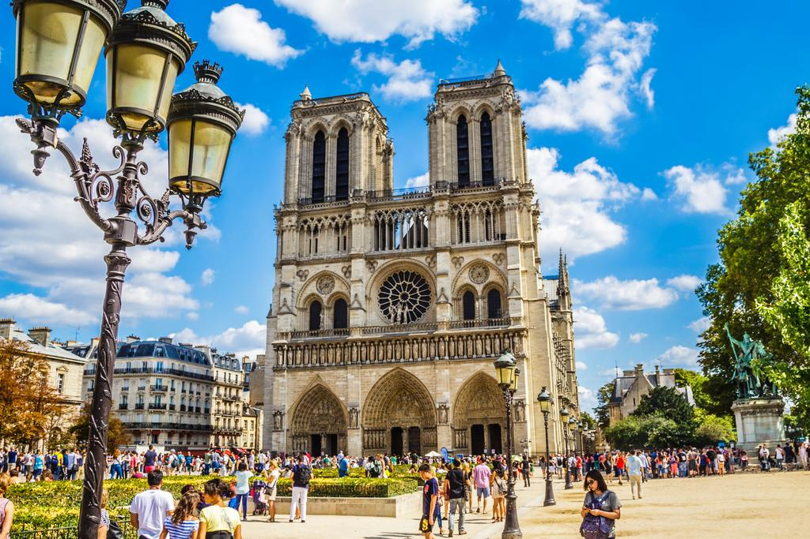

Europe is one of the most dynamic continents in the world. It is a mix of so many cultures within a couple hours of flying. Growing up in London I was exposed to so much culture besides the culture of the UK just being so close to these different countries. One of my favourite places in Europe besides London is Paris because of how beautiful and unique the architecture is.Even the most poor neighborhoods have the beautiful balconies and and detailed siding on its buildings. Paris is also home to some of the most beautiful landmarks including the Eiffle Tower and Notre Dame Cathedral.
Paris, France
Being such a historic city Paris is home to some of the most beautiful looking buildings. Here are some of my persoanl favourite spots in Paris including the Louvre and The Arc de Triomphe




London, England
London is also home to some of the most amazing landmarks in the world. From Big Ben and parliment to even the Gherken tower in the work distrcit, London has beautiful views from all angels. These are some of my favourite shots of London all from different areas and neighborhoods.